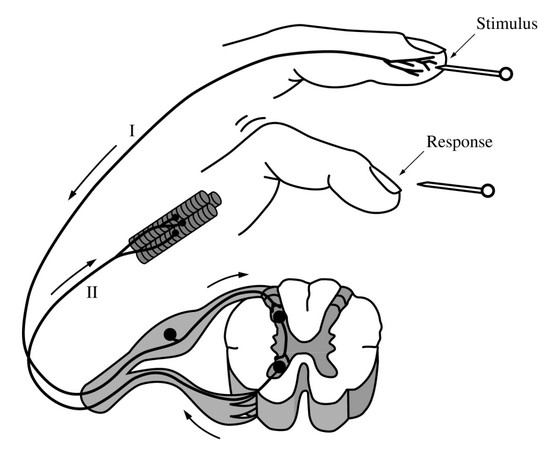

The diagram above depicts the response to a pinprick (stimulus) on the tip of a human finger. The arrows show the direction of impulse transmission along the labeled axons. If axon II was damaged before the pinprick, which of the following is most likely?